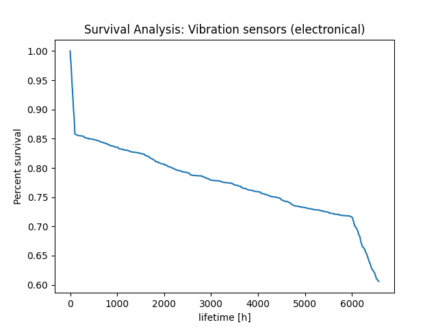
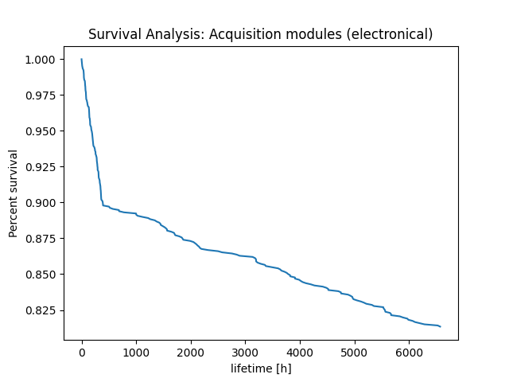
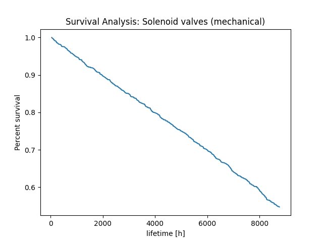
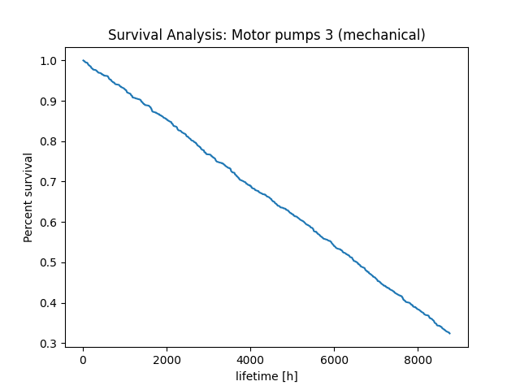

Kaplan-Meier estimate: Temperature sensors (electronical)
Kaplan-Meier estimate: Pressure sensors (electronical)
Kaplan-Meier estimate: Vibration sensors (electronical)
Kaplan-Meier estimate: Acquisition modules (electronical)
Kaplan-Meier estimate: Logic solvers (electronical)
Kaplan-Meier estimate: Solenoid valves (mechanical)
Kaplan-Meier estimate: Shutdown valves (mechanical)
Kaplan-Meier estimate: Motor pumps 1 (mechanical)
Kaplan-Meier estimate: Motor pumps 2 (mechanical)
Kaplan-Meier estimate: Motor pumps 3 (mechanical)
